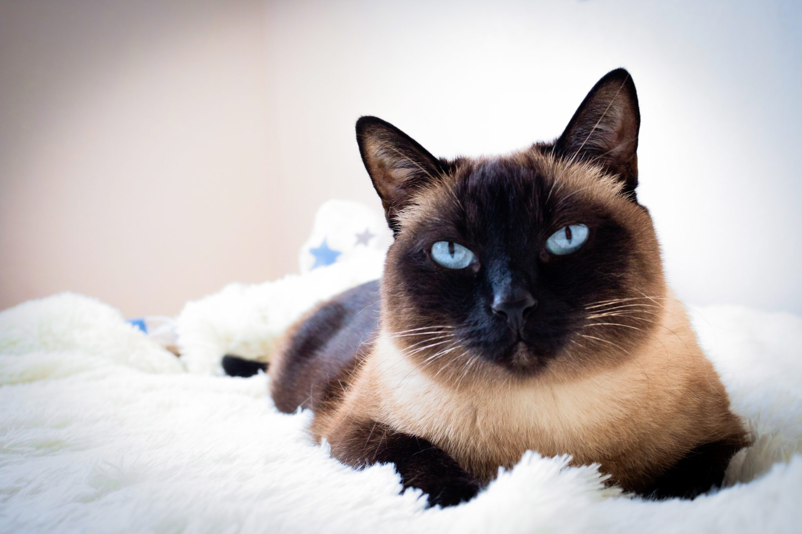

TODO: Transforme o texto "Voltar" abaixo em hiperlink que leva o usuário para a página com o sumário de todos os gatos
VoltarJá o temperamento da raça de gato Siamês pode ser imprevisível. Na maioria das vezes, são tranquilos, amáveis e fiéis, mas algumas vezes, de repente, o comportamento muda, e eles podem ficar mais quietos e apáticos.
